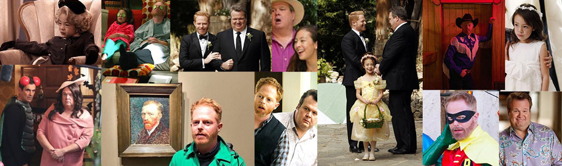

Familia Tucker-Pritchett
Mitchell Pritchett es el hijo menor de Jay Pritchett y esposo de Cameron Tucker con quien tiene una hija adoptada. Mientras que él es sobreprotector, no le gustan las demostraciones de afecto en público y suele actuar muy nervioso y reservado, Cameron tiene una personalidad melodramática y extrovertida. Un dato curioso que marcó mucho a Cam es su obsesión por el payaso Fizbo al que él interpretaba. Lily Tucker-Pritchett nació en Vietnam y fue adoptada de bebé. Durante las primeras temporadas tiene un papel muy secundario, sin embargo, a partir de las siguientes temporadas empieza a destacarse por su sarcástico y originalidad.
